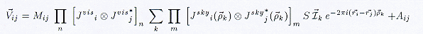

*Please note Middle European Time (MET) is -2:00 GMT
Synthesis II:
Measurement
Equation
Components
Tony Willis - DRAO, Penticton
The ACSIS (Auto-Correlation Spectrometer Imaging System), which will provide a spectral line imaging capability for the JCMT telescope in Hawaii, is designed to receive data from a 16-feed focal plane array. The correlator for each feed will have the capability of producing a new 8192 channel spectrum every 50 milliseconds. The system must be able to observe for a total of six minutes between calibrations. This means that the reduction computers must be able to store and process up to 3.8 Gbytes (16 x 8192 x 4 x 20 x 360) of data every six minutes. After a 6 minute scan has been calibrated, it will be sent to an on-the-fly gridder; the reduction computer will then begin handling the next scan.
The budget for the reduction and gridding computers is small, about $160,000 U.S. The only way we expect to handle this amount of data within this computing budget is to use a distributed processing system consisting of commodity-priced components (i.e. PCs or alpha workstations). However, the rate at which data must be passed between these machines is high. Initial tests with a toy system have used a 100 Mbit ethernet. However the final system may need to use Gbit ethernet, fiberchannel, or Myrinet to carry the expected traffic.
This high data rate forces us to make a critical decision. The current implementation of AIPS++ uses Glish clients in a 'hidden' way to add extra programming functionality to Glish. The clients coexist with Glish on the same machine and all data flow between clients passes through the Glish interpreter. However, that data flow rate is unacceptable for the ACSIS application. Tests, using a Sun 200 MHz dual processor UltraSPARC, show that if client1 sends 100000 spectra each containing 8192 floating point numbers to client2, via the Glish interpreter, the system takes approximately 1 hour 20 minutes to digest the 100000 incoming spectra, and the second client only manages to catch approximately 57000 spectra by that time. (I'll also admit I got fed up with waiting for measuring how long it would take the second client to get all 100000 spectra and did a ctrl-C at this point!)
However, the Glish designers anticipated this situation, and provide a link operator which enables one client to directly communicate with another client without going via the Glish interpreter. Use of the link operator dramatically reduces the time required for client1 to send 100000 spectra to client2, and have client2 catch all 100000 spectra, to a bit more than a minute! This corresponds to a data transfer rate of about 50 Mbit per second, which is quite acceptable.
Because the JCMT currently uses a package called DRAMA for message passing between tasks, we also needed to make sure that Glish could transfer data between tasks at a rate at least comparable to that of DRAMA before we could argue that Glish should be used for data reduction. Our measurements show that data messages passed via the Glish link method are usually transferred at least as fast as DRAMA messages, and sometimes the Glish data rate surpassed that of DRAMA. Other factors influencing the choice of AIPS++/Glish include the rich class library that has been developed for AIPS++ and the expectation that AIPS++ will provide a powerful package for post-observation analysis of single dish data in the next couple of years.
The following Glish script gives an example of how a toy system for ACSIS data reduction might work. Assume I have three computers available for use: castor and pollux, which are both dual processor 200MHz ultraSPARC machines, and jcmtdual, a dual processor 266 MHz PII PC running Linux.
I start the script on castor. I first launch a Glish client called drama_to_glish. This client, as its name suggests, will listen for DRAMA messages and convert them to Glish events. This translator is necessary since the JCMT observing system that collects the raw data will still use the DRAMA system and the raw correlator data will arrive as DRAMA messages. (Thanks are due Darrrell Schiebel and Tony Farrell (Anglo_Australian Telescope) for their assistance in getting this translator running properly.)
I then launch six data processor clients, two on each of the three machines available to me. The setup, step, and initialize events contain messages telling the data processor clients how the data will be reduced. Since the reduction methods are expected to be identical on all clients, I use multiple calls to the link_proc function to cause these events to be directly broadcast from the drama_to_glish converter to all data processor clients.
I then arrange for the six streams of data events to get directly sent from the drama_to_glish converter to a data_processing client. Each data event contains a Glish record with 8192 floatng point numbers of correlator lag data.
The following is the Glish script to perform the necessary operations.
# define generic link operations
func link_proc(a,b)
{
link a->setup to b->setup
link a->step to b->step
link a->initialize to b->initialize
}
# define locations of binaries on remote machines
system.path.bin.jcmtdual:=
'/lynx1/twillis/aips++/linux_gnu/bin'
system.path.bin.pollux:=
'/castor2/twillis/aips++/sun4sol_gnu/bin'
# define and startup clients
drama_server:=client("drama_to_glish")
acsis1:=client("process_acsis_sparc")
acsis2:=client("process_acsis_sparc")
acsis3:=client("process_acsis_sparc",host="pollux")
acsis4:=client("process_acsis_sparc",host="pollux")
acsis5:=client("process_acsis_linux",host="jcmtdual")
acsis6:=client("process_acsis_linux",host="jcmtdual")
# define basic links
link_proc(drama_server,acsis1)
link_proc(drama_server,acsis2)
link_proc(drama_server,acsis3)
link_proc(drama_server,acsis4)
link_proc(drama_server,acsis5)
link_proc(drama_server,acsis6)
# define specific data links
# this is where we really get the benefit
of the link operator
link drama_server->data to acsis1->data
link drama_server->data1 to acsis2->data
link drama_server->data2 to acsis3->data
link drama_server->data3 to acsis4->data
link drama_server->data4 to acsis5->data
link drama_server->data5 to acsis6->data
And away we go. The toy system has a DRAMA program which first sends various setup and initialization messages which are caught and converted by the drama_to_glish client. The DRAMA task then sends a stream of 8192 data vectors which are converted into Glish records by drama_to_glish and sent out to the various re-execution clients.
The fact that Glish clients only respond to and create events without knowing where these events are coming from or going to, with the interaction between events and clients being defined by the Glish script, provides additional flexibility. If we wanted to add more processing machines with more Glish clients, it would be a simple exercise to modify the above script to handle that situation. DRAMA clients, on the other hand, send or receive events from other specifically labeled clients. More work would be involved in modifying the client programs to add in message passing to the new machines and clients.
Synthesis II:
Measurement
Equation
Components
Tim Cornwell - NRAO, Socorro
In order to develop a robust system, we must test it often and thoroughly, and ensure that the results of the testing are acted on expeditiously. I thought that readers of our newsletter might be interested in how we test AIPS++. You should also regard this as a request for help, please read on....
We currently test AIPS++ in five different ways:
-
1. C++ unit testing
Specially written C++ test programs are compiled and run weekly. Typically, all classes in the reviewed code pass this test all the time. Unreviewed code, such as the synthesis code, does not always have test programs. The impact of this is lessened considerably by two factors: first, most of the code has been used for many months, and secondly that Glish-based testing catches a number of errors.- 2. Glish script testing
Scripts written in Glish exercise the system by testing, for example, all functions in a tool.- 3. Direct user testing
We ask users to exhaustively test all the functionality in some area. An example, would be that we ask someone to test all functions in the single dish analysis application, dish, and report on bugs and suggestions for more functionality.- 4. Un-directed user testing
Users test the system either while exploring it or while using it to process data. The use of AIPS++ at the GBT, WSRT, and Parkes has been invaluable in this respect for certain parts of AIPS++ such as the Table system and Glish. Other parts of the system, such as the synthesis package, have seen much less exercise.- 5. Build and Smoke Testing
To improve project-wide awareness of the Glish script testing, we now perform so-called "Build and Smoke Tests" three times a week. This practice is commonplace for Microsoft and other commercial software vendors. As described in an IEEE software article (Best Practices, IEEE Software, Vol 13, No. 4, July 1996), the important thing is to make it so that: "Every file is compiled, linked, and combined into an executable program every day, and the program is then put through a 'smoke test,' a relatively simple check to see whether the product 'smokes' when it runs."Our "smoke test" is to run the assay script, which executes a number of Glish-based test scripts within the typical user environment. For logistic reasons, we do this three times a week instead of daily. The summarized results are then mailed to our aips2-lib mail exploder so that if the system "smokes," everyone can see who is responsible. This accomplishes two objectives: first, developers are kept aware of the current state of the system, as it would be experienced by users, and second, peer-pressure is utilized to minimize breakages.
- 2. Glish script testing
Our pool of local users and external beta-testers help us with the user testing. We are always looking to expand this pool. If you are willing to help, please contact Tim Cornwell (tcornwel@nrao.edu) or Athol Kemball (akemball@nrao.edu).
Synthesis II:
Measurement
Equation
Components
Bob Garwood - NRAO, Charlottesville
DISH is a collection of Glish scripts and clients that provide an environment within AIPS++ which is intended to be used for single dish radio astronomy data analysis. Its initial aim is to be a worthy replacement for traditional single dish analysis programs such as UniPOPS. Eventually it will provide access to more advanced data calibration and imaging utilities that will share the same basic design as the synthesis calibration and imaging utilities in AIPS++. The primary design goal has been to provide a graphical user interface that is intuitive, unsurprising, and responsive. Users should feel that results go to obvious places and, whenever possible, are displayed as they occur. To use DISH, simply include dish.g after starting up AIPS++.
The DISH Graphical User Interface (GUI)
The following figure shows the major components of the DISH GUI.
{kind=link}
Click on image to obtain a larger view
The Results Manager is the core of DISH. All Glish variables created by DISH, in response to user actions, are stored in the Results Manager. These variables are available for the user to interact with at the Glish command line. DISH immediately plots the currently selected variable - if it can be plotted. A description is associated with each variable. The user can change the description or the name of a variable in the Results Manager. Certain variables can also be browsed. All variables can be further inspected.
The Menu bar at the top of the DISH GUI provides access to the File, Operations, Help and other features of DISH. New data files are created and existing data files are opened through the File menu. The GUI panels for each available operation are enabled and dismissed through the Operations menu. Multiple operation panels may be present at any time although screen size limitations are generally such that only a few will typically be displayed at one time. When enabled, each operation panel appears at the bottom of the DISH window. The operation shown in the above figure is for fitting baselines to the currently displayed spectra. Other operations include: applying selection criteria, averaging, smoothing, applying a user defined function, re-gridding, multi-operation sequences, saving data, and writing the data out in x, y columns in an ASCII file.
The most recent status message is shown in the text immediately below the Results Manager. Messages displayed here are also echoed to the AIPS++ Logger window.
Operations within DISH may operate on collections of scans or they may operate on individual scans. All operations place their results in the Results Manager. If the result can be displayed, it is. Operations on individual scans always operate on the most recently displayed scan so that, hopefully, the user is not confused as to what is being operated on.
Each time AIPS++ is exited while DISH is running, the current state of DISH is saved to disk. This state includes all of the contents of the Results Manager as well as the parameter values for the operations and user interface preferences. DISH is restored to this state when it is restarted.
Getting Data into DISH
In order to use DISH, you must first get data into an
AIPS++ table that DISH can interact with.
At the moment, DISH interacts with data which has been converted from a
Single Dish FITS binary table (SD-FITS) into an
AIPS++ table. In the future, DISH will interact
directly with an AIPS++ MeasurementSet.
To convert from SD-FITS to an AIPS++ table, use the AIPS++ utility program fits2table at the UNIX prompt:
fits2table input=SDFITS_file_name output=output_table_name
UniPOPS users must first convert the UniPOPS FITS to a valid SD-FITS file. UniPOPS FITS represents an early state of the SD-FITS convention. It has a few different features from that found in the final SD-FITS convention. The utility program uni2sdfits does this conversion:
uni2sdfits input=UniPOPS_fits_file_name
output=SDFITS_file_name
An AIPS++ MeasurementSet containing single dish data can be converted to a SD-FITS file using the ms2sdfits utility program:
ms2sdfits ms_name fits_name
Using the DISH Command Line Interface
No matter how sophisticated a GUI may be, there will always be things which a
user will want to do which can not be done with that GUI. Also, as users
become more sophisticated, they will often want to write their own scripts
using some of the same operations that are available in the GUI. All of the
operations done through the GUI are also available at the Glish
command line. The Trace Tool, when activated, shows these underlying
Glish commands as each GUI operation occurs. These can be used to
learn how the DISH GUI works, or the text from that window can be copied to
an editor and used as the starting point for a Glish script.
All of the values in the Results Manager can be manipulated at the Glish command line. These results can then be returned to the Results Manager. In this way, users can do things not available in DISH and return the results to DISH for further processing. The recipe that follows shows a simple example illustrating this.
| Goal | Reduce an on/off total power scan pair by extracting the ``on'' and the ``off'' source scans from an opened data set, constructing a difference scan, and inserting the result into the DISH Results Manager. |
| Using | dish |
| Assume | You have a data set named rawdata opened and available in the DISH Results Manager. An ``on'' scan is located at the first record and an ``off'' scan is located at the third record. |
| AIPS++/Glish Commands and Results |
Purpose and Background |
|---|---|
| rawdata.setlocation(1) | Move the rawdata pointer so that it points at the first record, where the ``on'' scan is located. |
| on := rawdata.get() | Get that scan and assign it to a variable named on. |
| rawdata.setlocation(3) | Move the pointer to point at the ``off'' scan location. |
| off := rawdata.get() | Get it and assign it to off |
| result := on | Initialize the result by making it a copy of on. This sets the structure and header values appropriate for this type of data. |
| result.data.arr := (on.data.arr - off.data.arr) / off.data.arr | Subtract the ``on'' data array from the ``off'' data array and divide the result by the ``off'' data array. |
| dish.rm().add('result', 'Diff. of rows 1 and 3', result, 'SDRECORD') | Add this result to the DISH Results Manager. The final argument tells the Results Manager that this is an SDRECORD, a type of result which the Results Manager can display and interact with. |
Conclusion: This is a simple example. Addition operations could be done to check that this operation was appropriate for this data, to scale the data, etc. The whole range of AIPS++ utilities are available at the Glish command line for use on results known to DISH. Any Glish value can be stored in the Results Manager. This will preserve it, along with the results of the contents of the Results Manager, between invocations of DISH.
Future Plans
For the first full release of AIPS++ operations
such as multi-component fitting and FFTs will be added to DISH. DISH will be
able to interact with an AIPS++ MeasurementSet.
The command line interface will be cleaned up so that users can more easily
insert their own specialized operations into DISH.
The long range plan for single dish calibration and imaging in AIPS++ is to follow the same model used for synthesis data within AIPS++ (Kemball 1999). An initial test of single dish calibration is expected in early 1999. An on-the-fly single dish imaging tool is planned for later in 1999.
Synthesis II:
Measurement
Equation
Components
Tim Cornwell, - NRAO, Socorro We are still working towards an AIPS++ release within the next few months. We plan to freeze the working code on 15 March 1999, and make a release once testing is complete (see the article on Testing of AIPS++ for more information). Following the third beta release last October we made two stable releases, one in November and one in January. A stable release is any weekly build of the system that passes all the relevant automated tests. It is therefore less of a milestone than a beta (for which more rigorous and comprehensive hands-on testing is done), but does serve to provide a stable platform for our alpha and beta testers.
In November, we held a meeting of our internal applications developers in Socorro to discuss and plan the integration of the various applications that have been developed. This was basically a tidying-up effort with the goals of ensuring that we use common components in our applications (especially the user interfaces) and that the applications can exchange high-level information in a straightforward way. Both goals were accomplished, as was planning of the final deliverables in the first release. One particularly nice example of an AIPS++ application is the imagefitter put together by Neil Killeen. This uses a number of separate AIPS++ tools: the image tool to access the an image; the regionmanager tool to denote the region to be fitted; least squares classes to perform the fitting; the display library to display the results; the componentmodels to hold the results; and finally, Glish to coordinate and control all of these. Such an application relies upon and tests all the work that we have put into developing the AIPS++ infrastructure. Another important push that has resulted from the integration meeting is to make one final round of improvements to the user interface, streamlining the flow of information around the interface. These improvements are being evaluated by our alpha testers.
We gave a number of presentations at the recent ADASS meeting in Champaign-Urbana. Athol Kemball gave a talk on the design of the synthesis calibration software, and a number of posters were presented on various aspects of AIPS++. Demonstrations were given for AIPS++ and the parallel code running on an NCSA SGI Origin 2000. In addition, Athol Kemball and Joe McMullin attended the AAS meeting in Austin and gave similar demonstrations at the NRAO booth. We expect this to be a regular event at future AAS meeting. In particular, at the Chicago meeting in June 1999, we expect to be able to hand out CD-ROMs containing the first release of AIPS++.
Finally, you can see a tour of AIPS++ capabilities from our home page. This is based upon the presentations given at ADASS and the AAS.
Synthesis II:
Measurement
Equation
Components
Ger van Diepen - NFRA, Dwingeloo
Introduction
The previous newsletter contained an article about the basic AIPS++ Table System. Each table uses storage managers to store the
data of a table column on disk. One important storage manager is the Tiled
Storage Manager (TSM). This article gives some background information about
the TSM and explains its properties and where it is used. It is primarily
meant for the technically oriented reader, but may give some insights to the
casual reader.
In several packages image access in the X-direction is very fast, in the Y-direction it is possible but rather slow, while in the Z-direction it is very slow if possible at all. It was felt that a mechanism was needed to make accessing images in all directions almost equally fast, e.g. getting a spectrum out of an image cube should be easily possible. A well-known technique for solving this problem is to store the data in a tiled way instead of a linear way. It is used successfully in some modern packages (e.g. Karma). It was decided to make use of this technique in the AIPS++ Table System by developing the Tiled Storage Manager.
TSM Tiling
The TSM stores its data in so-called tiles. Each tile is a regular subset of
the entire data array. For example, an array of 64*64 pixels can be divided
in 4 quadrants of 32*32 pixels. Each quadrant can be seen as a tile. When
writing the array into a file each tile is stored linearly instead of storing
the entire array linearly. A tile is read/written with one I/O request, so
its size should be large enough, but not too large. A typical size is 32K
pixels.
By sizing the tile dimensions in an appropriate way it is possible to access the data equally efficient in all directions, e.g., with an image cube of 1024*1024*64 pixels, the tile size could be chosen as 64*64*8 pixels. Then 16*16*8 tiles are needed for the entire cube. To read a vector in the X-direction the TSM needs to read 16 tiles. For the next vector the same 16 tiles are needed. This leads to the idea of using a cache containing enough tiles to avoid unnecessary reading, which is what the TSM does. It assumes that sequential access is done, and based on the first access it tries to size its cache such that it can hold all tiles necessary to read each tile only once. It is also possible for the user to give the access pattern beforehand so the TSM can calculate the optimal cache size. It can be seen that accessing a vector in the Y-direction also requires 16 tiles, so access in X- or Y-direction is about equally fast. In the Z-direction only 8 tiles are needed for a vector.
Only a 3-dimensional example is discussed above. The TSM can, however, handle any dimensionality. By default the tile size will be set so that about the same number of tiles is needed in all dimensions. It will always try to fit an integral number of tiles in each dimension. Tiles have the same length to make it easy to find them in the file. Since the remainder of the last tile is stored on disk, the remainder should be as small as possible to avoid waste.
It is also possible to set the tile size explicitly. Of course, you can set the tile size such that access in one direction is (much) faster than another direction. In the above example the tile size could be defined as 1024*32*1 which means that the data is effectively stored in a linear way. Access in X will be very fast, but in Z it will be tremendously slow.
TSM Cache
A package like Karma uses the virtual memory mechanism of the OS as
its cache by mapping the data file into virtual memory. In this way the page
table acts as the cache controller. It has the advantage that no special
software needs to be written to maintain a cache and to calculate optimal
cache sizes. It has, however, two important disadvantages:
- In a networked system it may well be possible that the data is written on a SUN and read on a DEC Alpha with reversed byte ordering. A package like Karma circumvents this problem by reading the entire file into memory (thus swap space) while reversing the byte order. AIPS++ images can be very large, which makes this solution impossible for the general case. Note that, as with all other storage managers, the TSM stores the data in a canonical format to ensure that the data can easily be read from machines with different byte orderings or even different floating point representations. The canonical format is big-endian ordering and IEEE floating point.
- The OS will not be able to predict which tiles will be needed next. Usually the TSM can predict that very well making it possible to pre-fetch tiles. In the current system this possibility is not yet exploited, but it in the future it will be.
It was therefore decided that a TSM should have its own cache. The size of the cache is the number of slots; each slot contains a tile with its data in local format (thus conversion from canonical to local format is done when reading a tile). When accessing data the TSM looks to see if the tile is in the cache. If not, it removes a tile from the cache and reads the required tile into the freed slot. At the moment it uses the least-recently-used algorithm to free a slot. In the future it may be possible to use other algorithms.
It is very important that the cache size is not too small. One tile which is too little can make a huge difference in performance. To assist the programmer in analyzing the behavior of the cache, the TSM keeps statistics and has functions to show and clear these statistics.
The Various Tiled Storage Managers
A table column can be bound to a TSM, so all data in that column is stored in
a tiled manner. A TSM stores the data of the column in one or more so-called
hypercubes. Each hypercube is fully regular, thus the data arrays from the
rows stored in a hypercube has the same shape. But since there can be more
than one hypercube for a TSM, it is possible that the column can have
irregularly shaped data in its rows. For example, a MeasurementSet can
contain line data and continuum data. Each row contains the data for all
polarizations and channels, so a row of line data has shape 4*128 and a row
of continuum data has shape 4*1. They can be stored in two different
hypercubes, one for line and one for continuum data. In fact, both hypercubes
can have their own tile size.
Four flavors of the TSM have been developed, each with its own behavior regarding the data array shapes:
- The TiledColumnStMan is most strict. It requires that the data have the same shape in all rows, so it can only be used if the table column is defined with the FixedShape attribute. So all data is stored in only one hypercube.
- The TiledCellStMan is least strict. It uses one hypercube per row, thus the data in each row can be differently shaped.
- The TiledShapeStMan is a mixture of the previous flavors. It creates a new hypercube when the data in a row has a shape that has not been used before. So in the MeasurementSet example above it would automatically create two hypercubes.
- The TiledDataStMan is similar to the TiledShapeStMan. The only difference is that the hypercube is not chosen automatically, but the user has full control over the creation of hypercubes. So the user may decide to use different hypercubes, even if the data shape is the same. It needs a special id-column (e.g. spectral window id) to make the choice.
All TSM's, except TiledDataStMan, are in principle completely transparent to the user. Once a column is bound to a TSM, the user does not need to be aware if a TSM is used, or a more regular storage manager like StManAipsIO. TiledDataStMan is different, because it requires the programmer to call some specific functions to create and extend the hypercubes. This was felt to be cumbersome, therefore this storage manager is somewhat outdated and has been replaced by the newer TiledShapeStMan.
AIPS++ Experiences
In the AIPS++ project the TSM is used
successfully in two important cases:
- Images (usually 3D) are stored using the TiledCellStMan. In general, it has proven to be a very successful technique. Access in the X-direction is slower than in a package like Miriad, but in the Y- and especially in the Z-direction it is so much faster that the slower X-access is not seen as a real disadvantage. In many cases (e.g. when calculating the mean or adding two images) the order of access to an image is not important. In such cases the data is accessed tile by tile, which ensures that the cache needs only one tile and that access efficiency is optimal. Reading or writing an image in this way gives very good performance. For example, on an UltraSparc2 adding two 8 Mb images and storing the result in a third one takes less than 2 seconds elapsed time.
- The data and flags in a MeasurementSet are usually stored via a TSM in 3D tiles with axes for polarization, frequency and time/baseline. Sometimes the last dimension is separated, resulting in 4D tiles. The tiling makes it possible that, for example, time-baseline plots are as fast as frequency-time plots. The TSM makes it possible to avoid expensive sort steps, as used in other packages.
The various fillers decide which TSM flavor is used. For example, the WSRT filler uses the TiledColumnStMan, while others use TiledDataStMan or TiledShapeStMan.
The Lattice and Image classes are fully based on the TSM. They contain several classes to iterate through an image in the most efficient way. These classes (e.g. LatticeApply, LatticeIterator, LatticeNavigator) have proven to be very useful, because sometimes it is hard to formulate the correct mental picture on how to set the optimal cache size for a particular access pattern.
Synthesis II:
Measurement
Equation
Components
Athol Kemball - NRAO, Socorro
This article is the second in a series concerning synthesis reduction in AIPS++. It considers the Measurement Equation (ME) in more detail and describes the correspondence between ME components and more traditionally defined calibration quantities. As pointed out in the first article in this series, the ME does not represent any new physics, but is simply a formulation of the interferometry equations that is sufficiently general to allow calibration and imaging for a generic instrument. It also suggests new and more correct forms of data reduction. The reader is referred to the series of articles by Hamaker, Bregman and Sault (1996), Sault, Hamaker and Bregman (1996), Hamaker and Bregman (1996), and Hamaker (1998) for more details.
We discuss here the implementation of the ME within AIPS++ (Noordam 1995; Cornwell 1995), and first consider some preliminaries. A generic interferometer is considered to measure a four-vector of cross-correlations between two recorded polarizations (p,q) for each of two feeds (i,j) characterizing an individual baseline. This measured vector includes instrumental calibration effects and is denoted by:
| (1) |
The ME relates the measured vector to the true polarized sky
brightness,  , which is expressed in a Stokes basis as:
, which is expressed in a Stokes basis as:
| (2) |
Different instrumental and propagation effects are modeled in the ME as calibration components and take the form of four-by-four matrices, acting on four-vectors of the type given above. The calibration components are sub-divided into two general categories based on whether they act in the image- or uv-plane. Calibration components which are feed-based are constituted as the direct matrix product of separate two-by-two Jones matrices for each feed on the baseline under consideration, as:
| (3) |
Provision is also made for multiplicative and additive baseline-based calibration components, which are not decomposed into feed-based terms. The calibration matrices are expressed in the polarization basis (p,q) of the feed, which may typically be circular or linear. For reference, the direct matrix product of two matrices is defined as:
| (4) |
The full ME including image-plane and uv-plane calibration effects can be defined in terms of the quantities described above as:
|  | (5) |
where:
- and are the individual n-th uv-plane and m-th image-plane calibration components respectively;
- denotes direction, and denotes the interferometer baseline vector;
- the matrix S converts the sky brightness Stokes polarization basis to the polarization basis used in the interferometer itself; and
- and denote multiplicative and
additive baseline-based instrumental effects respectively.
The ME thus reflects the standard Fourier transform relationship between the uv- and image-plane, and allows for generic calibration in both domains. Time and frequency averaging is assumed implicit in the ME form given here. The next article in this series will consider the individual calibration matrices in detail and their physical interpretation.
References
Cornwell, T. J., 1995, AIPS++ Note 183.
Hamaker, J.P., Bregman, J.D., and Sault, R.J., 1996, A&AS, 117, 137.
Hamaker, J.P., and Bregman, J.D., 1996, A&AS, 117, 161.
Hamaker, J.P., 1998, in press.
Noordam, J., 1995, AIPS++ Note 182.
Sault, R.J., Hamaker, J.P., and Bregman, J.D., 1996, A&AS, 117, 149.
Synthesis II:
Measurement
Equation
Components
October 15, 1998 - January 15, 1998
Athol Kemball - NRAO, Socorro
A preliminary wide-field imaging capability has been added to the imager module, in addition to several enhancements of a general nature. New primary beam models have been implemented which will be used in the mosaicing development effort. The deconvolution code has been re-structured; a new multi-scale CLEAN deconvolution algorithm and the initial implementation of maximum entropy methods have been added.
The user interface has been significantly revised, and is now based on a tool manager, which presents both GUI and command-line parameter-setting interfaces. A new record-based automatic GUI generation utility has been adopted. Data entry widgets for measures, files, quantities, scalars, ranges and records, amongst others, have been implemented in this framework. The new autogui capability has been used to develop an aipsrc GUI editor.
GUI utilities have been consolidated using a new widget server. Tk-based metawidgets have been created for dialog boxes, option menus, roll-up utilities, list boxes, check menus, and tape decks, amongst others. Other standard GUI utilities include a general text window, and label and message line utilities. This consolidation is part of the application integration initiative to standardize the user interface.
The AIPS++ WWW home page has been revised and edited with continuing improvements.
Calibration development has continued with the implementation of a new calibration table format, and an initial cross-calibration capability. Work continues actively in this area.
Support for region specification in images has been added through a new region manager, with an associated GUI interface.
A new AIPS++ release plan has been checked in to the system as Note 222.
Work on TMS-related AIPS++ utilities at NFRA has continued with the implementation of a new TMS dataset table and enhancements to the WSRT mini-package, including msbrick.
The MSSelector class has been rationalized, and split into several new classes, including MSFlagger, and MSRange. A new version of the MSSummary class has been checked-in, as well as a new class to list MeasurementSet data (MSLister).
Work has continued on Glish in support of the new Tk client (glishtk), which is now the default rather than the rivet implementation, and in general areas. These include the modification of request/reply so that other events are not blocked, the implementation of new sub-sequence semantics, the use of dynamically loaded libraries for glishtk and pgplot, a separate configuration script for pgplot, and the addition of new fields to the client records (e.g. host and pid).
Numerous changes have been made to the Parkes multi-beam code. Some changes have been made in support of the parallelization initiative, including a parallel version of imager (pimager.g), the implementation of command logging to the user interface to allow batch submission of Glish scripts, and some changes to support MPI, including an option to force Glish socket communication if required.
The GBT MS filler has been revised and optimized. The dish package has also been enhanced, along with the GBT commissioning utilities. New data have been checked into the system for the dish demonstration.
An initial implementation of small Glish data types (items), such as regions, has been undertaken. This will allow easier transfer of these quantities from one tool to another.
The Lattice module has been revised in several general areas, and Lattice-based convolution has been added.
Sub-table names no longer contain the full main table name, to allow a direct UNIX mv of the table files directly.
The fitting classes have been extensively overhauled, and offer improved capabilities in many areas, with support for both the linear and non-linear cases, large problem sizes, and constraints. A new fitting capability has been added for two-dimensional components in Lattices and Images.
The new C++ for scope rules have been adopted, and the use of the keyword explicit has been enabled.
The explicit use of the logger in many Glish scripts has been replaced by the use of note.g.
A new compiler page has been added to the WWW page to record compiler-specific syntax requirements and propagate this information throughout the project.
The command-line parameter-setting shell app.g has been checked in, with related revisions to the meta-information in types.g.
An initial check-in of the Display Library classes has been completed.
The makedefs have been extended to allow linking against the I/O performance profiling PABLO libraries, developed by the NCSA.
A new image component fitter (imagefitter) has been added to the system. It performs 2-d component fitting in the image plane and has an associated GUI interface.
The Lattice Expression Language (LEL), described in Note 223, has been checked into the system. This adds the capability to perform very flexible operations on Images and Lattices.